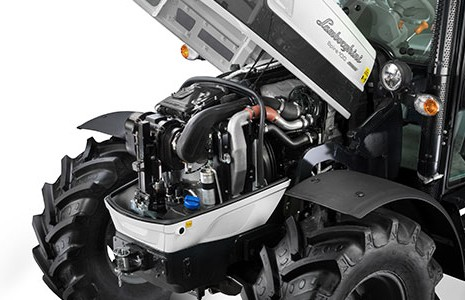
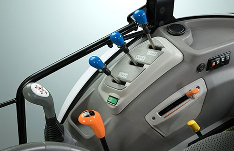
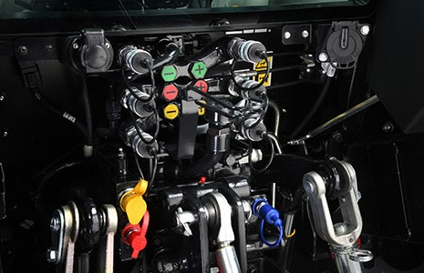
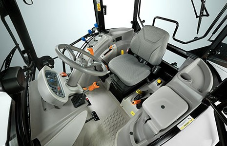

Los tractores Lamborghini tienen por naturaleza un estilo que no pasa desapercibido. Pero, además de su inigualable elegancia, el Spire Trend también presenta una tecnología de vanguardia para garantizar la máxima eficiencia y una excelente fiabilidad, con los nuevos motores FARMotion 35 de 3 cilindros, una transmisión de altas prestaciones, el nuevo diseño del puesto de conducción y muchas otras novedades.
Motor:
El nuevo Spire Trend monta el motor FARMotion 35 de 3 cilindros de última generación, diseñado específicamente para el uso agrícola, que se caracteriza por una significativa reducción del tamaño, el ruido y el consumo. De hecho, la nueva geometría de las culatas y de las cámaras de combustión, combinada con la inyección Common Rail de 2000 bares máximos, mejora el proceso de combustión del gasoil, optimizando el potencial del motor, en beneficio del bajo consumo. Gracias a la recirculación externa de los gases de escape EGR con control electrónico, combinada con un DOC+DPF (modelos 70-80) o DOC+DPF+SCR (modelos 90-100), los motores FARMotion 35 cumplen con la normativa de control de emisiones Fase V.

Transmisión:
En los Spire Trend, se incluyen dos configuraciones distintas del cambio, para adaptarse a cada necesidad específica. La versión básica consta de una moderna caja de cambios de 5 velocidades con 3 gamas. Opcionalmente, se puede añadir un divisor (accionado mediante una palanca cómodamente situada bajo el volante), que duplica las relaciones hacia delante, pasando así de 15+15 a 30+15. Los tractores equipados con inversor Powershuttle también pueden equiparse con cambio bajo carga de 2 marchas Hi-Lo, mientras que de serie incluye siempre las funciones Stop&Go, ComfortClutch y SenseClutch. Para una tracción siempre al máximo nivel, se incluyen de serie el acoplamiento electrohidráulico de la tracción delantera y el bloqueo de los diferenciales.

Sistema Idraulico:
Para lograr la máxima productividad con cualquier implemento, los Spire Trend montan de serie una bomba hidráulica de 56 l/min y distribuidores auxiliares de 4 vías (6 opcionales) de control mecánico. El circuito de dirección dispone de una bomba dedicada de 20 l/min que asegura la máxima seguridad y fluidez de conducción, incluso con el motor al ralentí. El elevador trasero de control mecánico tiene una capacidad máxima de elevación 2500 kg, que, con el equipamiento opcional, llega hasta 3500 kg. Además, ahora está disponible el control EasyLift, con el que podrás subir y bajar los implementos pulsando un solo botón en la consola. Las velocidades de serie de la TDF son 540 rev/min + 540 ECO, pero opcionalmente se puede añadir la 1000 rev/min o la sincronizada. Una cómoda palanca modula con precisión el acoplamiento del embrague dedicado al accionamiento de la TDF.

Cabina:
La nueva cabina de los Lamborghini Spire Trend se distingue por el estilo, la óptima visibilidad, el elevado confort y una comodidad de accionamiento de los mandos sin igual en su categoría. El atento estudio del puesto de conducción ha creado un ambiente de trabajo con una ergonomía y una racionalidad máximas. El asiento del conductor está dotado de suspensión mecánica (neumática opcional) para adaptarse perfectamente al peso del conductor. Todos los mandos están al alcance de la mano y la nueva pantalla analógica/digital sigue la columna de la dirección con inclinación regulable, para garantizar una excelente visibilidad de los principales parámetros de funcionamiento de la máquina, en cualquier condición.
